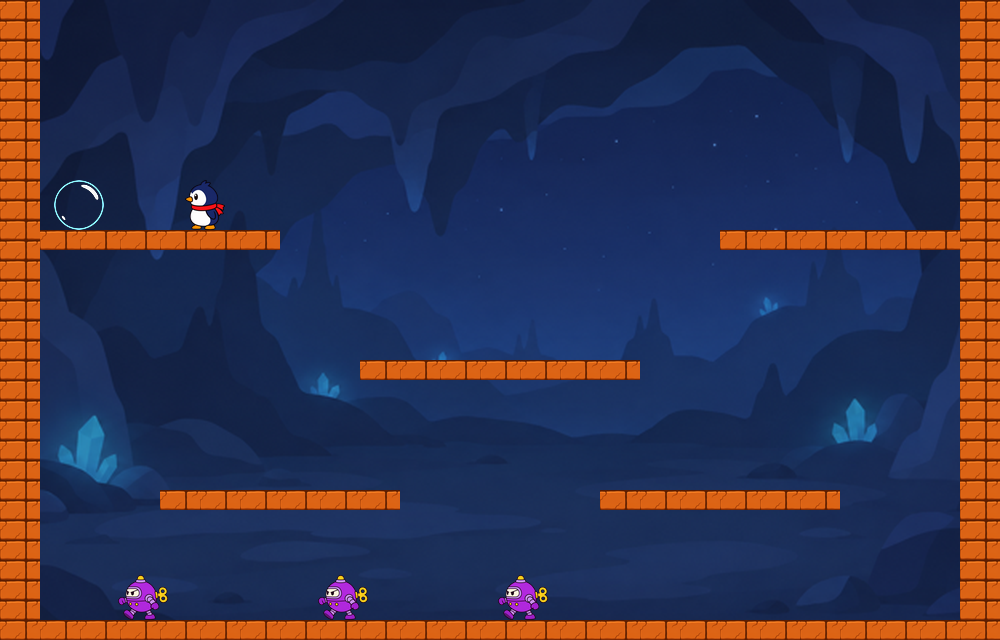
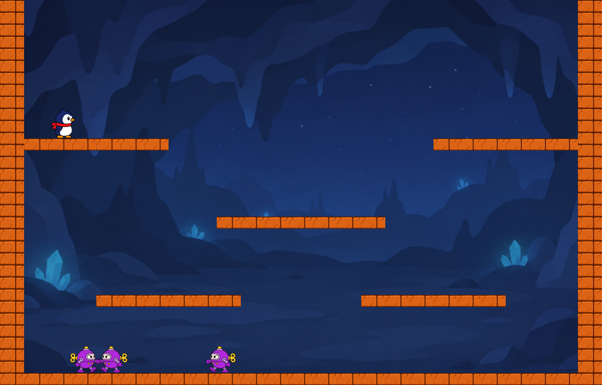
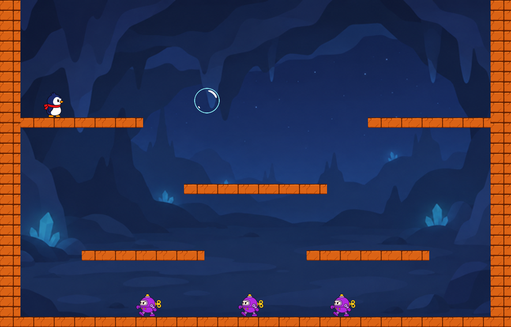

11장. 공통 부모 Sprite
10장까지 만든 Player, Enemy, Bubble에는 위치와 방향을 저장하는 코드가 겹칩니다. 벽 안쪽으로 좌표를 맞추는 코드도 세 클래스에 반복됩니다. 이번 장에서는 공통 코드를 부모 클래스 Sprite로 옮깁니다.
화면의 동작을 유지하면서 코드 구조를 고치는 일을 리팩터링(refactoring)이라고 합니다. 이 장을 마쳐도 펭귄과 적군, 물방울은 전처럼 움직입니다. 달라지는 것은 공통 코드를 보관하는 위치입니다.
11-1 Sprite를 만들고 Player가 물려받기
Player에는 좌우 이동과 점프뿐 아니라 벽 제한, 중력, 착지 코드도 들어 있습니다. 이 가운데 위치와 낙하처럼 다른 물체에도 필요한 부분을 Sprite로 옮깁니다. 코드가 가장 많은 Player부터 정리하면 부모에 둘 공통 코드를 찾기 좋습니다.
지금은 세 클래스가 각각 JLabel을 상속합니다. 앞으로는 Sprite가 JLabel을 상속하고, 세 클래스가 Sprite를 상속합니다. Sprite를 물려받은 클래스도 setIcon()이나 setLocation() 같은 JLabel의 메서드를 그대로 사용합니다.
공통 상태와 동작을 부모로 옮기기
src/bubble/game에 Sprite.java를 만듭니다. 이어서 Player.java의 부모를 JLabel에서 Sprite로 바꿉니다. 부모로 옮긴 필드와 메서드는 Player에서 지웁니다.
새 파일: src/bubble/game/Sprite.java
수정 파일: src/bubble/game/Player.java
package bubble.game;import java.awt.Rectangle;import java.util.List;import javax.swing.JLabel;import lombok.Getter;public class Sprite extends JLabel { private static final int GRAVITY = 1; protected int x; protected int y; protected int dy; protected boolean onGround; @Getter protected Direction direction; public Sprite(int x, int y, Direction direction) { this.x = x; this.y = y; this.direction = direction; setSize(50, 50); setLocation(x, y); } protected void keepInWall() { if (x < 40) { x = 40; } if (x > 910) { x = 910; } } public void fall(List<Rectangle> floors) { int bottom = y + 50; dy += GRAVITY; y += dy; onGround = false; for (Rectangle floor : floors) { boolean above = bottom <= floor.y && y + 50 >= floor.y; boolean across = x + 50 > floor.x && x < floor.x + floor.width; if (above && across) { y = floor.y - 50; dy = 0; onGround = true; } } setLocation(x, y); }}package bubble.game;import java.awt.Rectangle;import java.util.List;import javax.swing.ImageIcon;import javax.swing.JLabel;import lombok.Getter;import lombok.Setter;public class Player extends JLabel {public class Player extends Sprite { private static final int SPEED = 4; private static final int GRAVITY = 1; private static final int JUMP = -18; private int x; private int y; private int dy; private boolean onGround; @Setter private boolean left; @Setter private boolean right; @Getter private Direction direction; private ImageIcon playerR; private ImageIcon playerL; public Player() { super(80, 40, Direction.RIGHT); playerR = new ImageIcon("image/playerR.png"); playerL = new ImageIcon("image/playerL.png"); x = 80; y = 40; direction = Direction.RIGHT; setIcon(playerR); setSize(50, 50); setLocation(x, y); } public void move() {⋯ x += SPEED; direction = Direction.RIGHT; } if (x < 40) { x = 40; } if (x > 910) { x = 910; } keepInWall(); if (direction == Direction.LEFT) { setIcon(playerL); } else {⋯ dy = JUMP; } } public void fall(List<Rectangle> floors) { int bottom = y + 50; dy += GRAVITY; y += dy; onGround = false; for (Rectangle floor : floors) { boolean above = bottom <= floor.y && y + 50 >= floor.y; boolean across = x + 50 > floor.x && x < floor.x + floor.width; if (above && across) { y = floor.y - 50; dy = 0; onGround = true; } } setLocation(x, y); }}Sprite에는 위치를 나타내는 x, y와 세로 속도 dy를 둡니다. 착지 여부인 onGround와 바라보는 쪽인 direction도 함께 옮깁니다. 키 입력 상태인 left, right와 펭귄 그림은 Player에 남깁니다. 플레이어에게만 필요한 값이기 때문입니다.
부모로 옮긴 필드를 Player에도 남겨 두면 이름이 같은 별개의 필드가 생깁니다. 그러면 이동 메서드와 낙하 메서드가 서로 다른 좌표를 바꿀 수 있습니다. 기존 선언을 지우고 부모의 필드를 사용합니다.
protected로 자식에게 필요한 값 열어 두기
기존 Player의 좌표 필드는 private이었습니다. 부모로 옮긴 뒤에도 private으로 두면 자식의 move()와 jump()에서 직접 사용할 수 없습니다. 그래서 Sprite의 공통 필드에는 접근 제어자 protected를 붙입니다.
protected 멤버는 같은 패키지에서 접근할 수 있습니다. 다른 패키지의 자식 클래스에도 상속 관계에 따른 접근을 허용합니다. 여기서는 Player가 물려받은 x, y, dy 등을 직접 사용하도록 정한 것입니다.
모든 멤버를 protected로 바꾸지는 않습니다. 중력의 크기인 GRAVITY는 Sprite의 fall() 안에서만 쓰므로 private으로 둡니다. keepInWall()은 자식의 이동 메서드에서 호출하므로 protected입니다.
direction에 붙인 @Getter도 부모로 옮깁니다. Lombok이 Sprite에 getDirection()을 만들면 Player가 그 메서드를 물려받습니다. 따라서 물방울을 만들 때 쓰던 player.getDirection()은 그대로 동작합니다.
부모 생성자로 시작 위치 정하기
Player 생성자의 super(80, 40, Direction.RIGHT)는 부모 생성자를 호출합니다. 시작 좌표와 방향을 넘기면 Sprite가 필드에 값을 저장합니다. 이어서 setSize(50, 50)과 setLocation(x, y)로 크기와 화면 위치를 정합니다.
이제 Player 생성자는 공통 초기화를 부모에게 맡깁니다. 펭귄 그림을 읽고 오른쪽 그림을 선택하는 부분은 그대로 남습니다.
Player의 move()에서는 두 개의 벽 검사문을 지우고 keepInWall()을 호출합니다. 이 메서드는 x를 40부터 910 사이로 제한합니다. 좌표만 보정하므로 그림을 고르고 화면 위치를 갱신하는 코드는 기존 이동 메서드에 남겨 둡니다.
낙하와 점프를 이어 주기
fall()은 Player에서 지우고 Sprite에 둡니다. 중력으로 dy를 늘리고 발판 윗면을 통과했는지 확인하는 계산은 앞 장과 같습니다. 착지하면 dy를 0으로 만들고 onGround를 true로 바꿉니다.
Player의 jump()는 부모에게서 물려받은 onGround를 확인합니다. 발판에 서 있으면 같은 부모 필드인 dy에 JUMP를 넣습니다. 다음 게임 루프에서 부모의 fall()이 이 속도로 위치를 바꾸므로 점프가 이어집니다.
게임 루프의 player.fall(floors)도 고칠 필요가 없습니다. Player에 직접 작성한 메서드는 없어졌지만, 부모의 public 메서드를 물려받았기 때문입니다.
걷기와 점프 확인하기
실행 결과
기존처럼 BubbleFrame을 Run As → Java Application으로 실행합니다. 좌우 화살표로 움직이고 양쪽 벽 앞에서 멈추는지 확인합니다. 발판에 선 상태에서 위 화살표를 누르면 전처럼 점프해야 합니다.
가운데 발판에서 왼쪽 위 발판으로 뛰어오른 뒤 스페이스를 누릅니다. 펭귄이 발판 위에 서고 물방울이 발사되면, 위치와 방향을 사용하는 기존 코드도 그대로 동작한 것입니다.

11-2 Enemy가 Sprite 물려받기
Enemy에도 좌표, 방향, 중력과 착지 코드가 있습니다. 지금까지는 Player와 따로 작성했지만, 낙하와 발판 충돌 계산은 같습니다. 이제 Enemy도 Sprite를 상속하여 공통 코드를 사용합니다.
기존 코드의 동작에 문제가 있는 것은 아닙니다. 다만 낙하 규칙을 고칠 때 두 클래스의 코드를 각각 수정해야 합니다. 부모에 한 번만 작성하면 같은 규칙을 함께 적용할 수 있습니다.
중복된 낙하 코드 지우기
Enemy.java에서 부모를 Sprite로 바꿉니다. 좌표와 방향 필드, GRAVITY, fall()을 지웁니다. 생성자에서는 부모 생성자를 호출합니다.
수정 파일: src/bubble/game/Enemy.java
package bubble.game;import java.awt.Rectangle;import java.util.List;import javax.swing.ImageIcon;import javax.swing.JLabel;public class Enemy extends JLabel {public class Enemy extends Sprite { private static final int SPEED = 2; private static final int GRAVITY = 1; private int x; private int y; private int dy; private Direction direction; private ImageIcon enemyR; private ImageIcon enemyL; public Enemy(int x, int y, Direction direction) { this.x = x; this.y = y; this.direction = direction; super(x, y, direction); enemyR = new ImageIcon("image/enemyR.png"); enemyL = new ImageIcon("image/enemyL.png"); if (direction == Direction.LEFT) {⋯ } else { setIcon(enemyR); } setSize(50, 50); setLocation(x, y); } public void move() {⋯ x += SPEED; } if (x < 40) { x = 40; direction = Direction.RIGHT; } if (x > 910) { x = 910; direction = Direction.LEFT; } keepInWall(); if (direction == Direction.LEFT) { setIcon(enemyL); } else {⋯ } setLocation(x, y); } public void fall(List<Rectangle> floors) { int bottom = y + 50; dy += GRAVITY; y += dy; for (Rectangle floor : floors) { boolean above = bottom <= floor.y && y + 50 >= floor.y; boolean across = x + 50 > floor.x && x < floor.x + floor.width; if (above && across) { y = floor.y - 50; dy = 0; } } setLocation(x, y); }}super(x, y, direction)은 적군을 만들 때 전달받은 시작 위치와 방향을 부모에게 넘깁니다. 부모가 크기와 위치까지 정하므로 Enemy 생성자에 있던 setSize()와 setLocation()도 지웁니다.
적군 그림을 읽고 방향에 맞게 고르는 코드는 남겨 둡니다. Sprite는 공통 위치를 관리하고, Enemy는 어떤 적군 그림을 보여 줄지 정합니다.
fall()을 지우면 Rectangle과 List를 사용하는 코드도 Enemy.java에서 없어집니다. 두 import 문도 제거합니다. 게임 루프의 enemy.fall(floors)는 부모 메서드를 호출하므로 그대로 둡니다.
부모의 fall()에는 플레이어의 점프에 필요한 onGround 갱신도 들어 있습니다. 적군도 착지 상태를 저장하게 되지만, 적군의 이동 코드에서는 이 값을 사용하지 않습니다. 낙하와 착지 모습은 전과 같습니다.
방향을 바꾼 뒤 벽 안쪽으로 맞추기
적군은 벽에서 멈추는 대신 반대쪽으로 돌아서야 합니다. 따라서 벽을 넘었는지 검사하고 direction을 바꾸는 코드는 Enemy에 남깁니다. 벽 안쪽으로 좌표를 맞추던 대입문만 지우고 keepInWall() 호출로 바꿉니다.
먼저 x < 40 또는 x > 910인지 확인하여 방향을 바꿉니다. 그 뒤에 keepInWall()로 좌표를 보정합니다.
좌표를 먼저 보정하면 x는 이미 40부터 910 사이에 들어옵니다. 그러면 벽을 넘었는지 검사하는 조건이 거짓이 되어 적군이 돌아서지 못합니다.
적군의 낙하와 방향 전환 확인하기
실행 결과
게임을 다시 실행하고 적군 셋의 움직임을 관찰합니다. 적군은 발판을 벗어나면 아래로 떨어지고, 바닥에 닿으면 가로 이동을 이어 갑니다. 양쪽 벽에서는 방향과 그림이 함께 바뀌어야 합니다.
적군 셋이 바닥으로 내려와 걷는 모습이 전과 같으면 부모의 낙하 메서드가 제대로 동작한 것입니다. 벽에서도 잠시 지켜보며 반대쪽으로 돌아서는지 확인합니다.

11-3 Bubble이 Sprite 물려받기
물방울도 위치와 방향을 저장하고 양쪽 벽 안에서 움직입니다. 이 부분은 Player, Enemy와 같습니다. Bubble도 Sprite를 상속하여 중복된 필드와 초기화 코드를 줄입니다.
물방울의 비행 거리와 수명은 그대로 Bubble에서 관리합니다. 세 물체가 위치와 벽 제한을 공유하더라도 움직이는 방식까지 모두 같지는 않기 때문입니다.
위치와 방향의 초기화를 부모에게 맡기기
Bubble.java의 부모를 Sprite로 바꿉니다. 기존 x, y, direction 선언을 지웁니다. 생성자에서는 플레이어의 위치와 방향을 부모에게 넘깁니다.
수정 파일: src/bubble/game/Bubble.java
package bubble.game;import javax.swing.ImageIcon;import javax.swing.JLabel;import lombok.Getter;public class Bubble extends JLabel {public class Bubble extends Sprite { private static final int SPEED = 6; private static final int RANGE = 300; private static final int LIFE = 150; private int x; private int y; private Direction direction; private int distance; private int time; @Getter private boolean popped; public Bubble(Player player) { x = player.getX(); y = player.getY(); direction = player.getDirection(); super(player.getX(), player.getY(), player.getDirection()); setIcon(new ImageIcon("image/bubble.png")); setSize(50, 50); setLocation(x, y); } public void move() {⋯ } else if (y > 20) { y -= 2; } if (x < 40) { x = 40; } if (x > 910) { x = 910; } keepInWall(); setLocation(x, y); }}super(player.getX(), player.getY(), player.getDirection())은 물방울이 만들어지는 순간의 플레이어 위치와 방향을 전달합니다. 부모 생성자는 전달받은 값을 물방울의 필드에 저장합니다. 크기와 위치도 함께 정하므로 Bubble 생성자에는 물방울 그림을 지정하는 코드만 남습니다.
물방울이 저장하는 방향은 발사 순간의 방향입니다. 발사한 뒤 플레이어가 돌아서도 이미 만들어진 물방울의 방향은 바뀌지 않습니다. 각 객체가 자신의 필드 값을 따로 저장하기 때문입니다.
distance, time, popped는 물방울에만 필요한 상태이므로 Bubble에 둡니다. popped의 @Getter도 유지하여 게임 루프가 물방울의 제거 여부를 확인하게 합니다.
벽 제한을 공유하고 떠오르는 움직임 유지하기
move() 끝부분의 벽 검사문은 keepInWall()로 바꿉니다. 정해진 거리까지 옆으로 날아가는 코드와 그 뒤에 y를 줄여 위로 떠오르는 코드는 그대로 둡니다. 마지막 setLocation(x, y)가 바뀐 좌표를 화면에 반영합니다.
Bubble도 부모의 fall()을 물려받지만 게임 루프에서 호출하지는 않습니다. 상속받았다는 이유만으로 낙하가 자동 실행되지는 않습니다. 물방울은 기존처럼 move() 안의 규칙에 따라 날아가고 떠오릅니다.
물방울의 이동과 수명 확인하기
실행 결과
게임을 실행하고 오른쪽을 바라본 상태에서 스페이스를 누릅니다. 물방울은 전처럼 오른쪽으로 날아간 뒤 위로 떠올라야 합니다. 왼쪽을 보고 쏘았을 때도 같은 방식으로 확인합니다.
여러 개를 발사한 뒤 잠시 기다립니다. 먼저 쏜 물방울부터 사라지면 수명과 제거 코드도 그대로 동작한 것입니다.

11장 완성 코드 보관하기
걷기와 점프, 적군의 방향 전환, 물방울의 이동과 소멸을 확인한 뒤 src/bubble/game의 완성 코드를 ex11에 복사합니다. 새로 만든 Sprite.java도 함께 보관합니다. 다음 장에서는 이 구조를 바탕으로 물방울에 닿은 적군을 가둡니다.